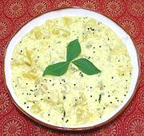

|
Ash Gourd & Yogurt KootuIndia - Tamil Nadu - Poosanikkai Mor Kootu | ||||
| Serves: Effort: Sched: DoAhead: |
4 side *** 1 hr Yes |
An excellent contrasting side dish served with rice and a main dish. It is a little sharp and a little simple to be a vegetarian main dish. | |||
|
1 ------ 1/3 1 2/3 1 1 ------ 1 1/8 1/2 ------ 1 1 5 ------ |
# --- c t t c --- c t t --- t t --- |
Ash Gourd (1) -- Paste Coconut (2) Chili Serrano (3) Cumin Seed Rice Flour Yogurt, plain ---------- Water Turmeric Salt -- Temper Oil (4) Mustard Seeds Curry Leaves (5) ----------- |
Prep - (20 min)
|
isv_wmel2 150503 inet
- www.clovegarden.com
©Andrew Grygus - agryg@aaxnet.com - Linking to and
non-commercial use of this page is permitted.